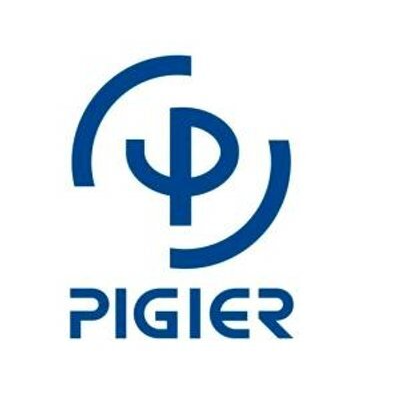

|  | Bienvenue à PIGIER BENIN |
Salut je suis Jacques OUSSA étudiante en RMS 2 à pigier benin j'ai 20 ans
je suis béninois je viens de Porto-Novo
j'ai obtenu mon CEP en 2016 au CS Mgr Bresillac.
J'ai continuer et j'ai décrocher mon BEPC en 2020
Après ma première année du lycé j'ai continuer et j'ai obtenu mon Bac en 2023
et c'est de là que j'ai décidé de m'inscrire à pigier bénin.